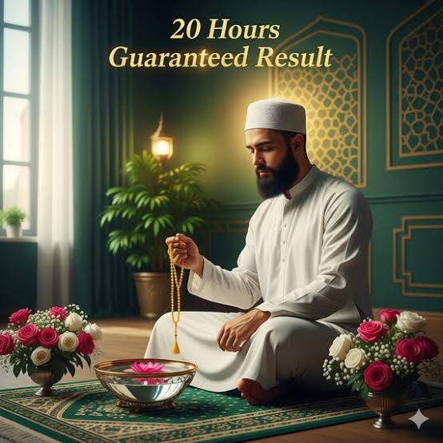

Istikhara Service
Seek divine guidance for important decisions in your life

Istikhara - Seeking Divine Guidance
استخارہ ایک خوبصورت اور طاقتور اسلامی عمل ہے جس کے ذریعے زندگی کے اہم فیصلوں کے وقت اللہ تعالیٰ سے رہنمائی مانگی جاتی ہے۔ ہمارے تجربہ کار علماء آپ کو اس مقدس عمل میں خلوص، صبر اور گہری روحانی سمجھ کے ساتھ رہنمائی فراہم کرتے ہیں۔
About Istikhara
استخارہ کا مطلب ہے ”بھلائی طلب کرنا“۔ یہ ایک ایسی دعا ہے جو رسول اللہ ﷺ نے فیصلے کرتے وقت اللہ سے رہنمائی مانگنے کے لیے سکھائی۔ یہ اللہ پر بھروسہ کرنے اور اس سے دنیا و آخرت میں بہتری کی طرف رہنمائی مانگنے کا ذریعہ ہے۔
Whether you are deciding about marriage, career, business ventures, relocation, or any other significant life matter, Istikhara provides a spiritual framework for making decisions with confidence and peace of mind.
Benefits of Istikhara
فیصلہ سازی میں وضاحت
Gain clarity and confidence in your important life decisions.
اندرونی سکون
Experience peace of mind knowing you have sought divine guidance.
روحانی حفاظت
Protect yourself from making decisions that may not be in your best interest.
اللہ پر بھروسہ
Strengthen your trust and reliance on Allah's wisdom and plan.
الٰہی بصیرت
Receive insights and signs that help illuminate your path forward.
مستند رہنمائی
Guidance based strictly on the Quran and authentic Sunnah.
Our Istikhara Process
-
1
Initial Consultation
رازدارانہ مشاورت میں اپنے حالات اور جس فیصلے کا سامنا ہے اسے ہمارے عالم سے شیئر کریں۔
-
2
Preparation & Guidance
استخارہ کی تیاری کے بارے میں رہنمائی حاصل کریں، بشمول تجویز کردہ نمازیں اور دعائیں۔
-
3
Istikhara Performance
ہمارا عالم آپ کی طرف سے مکمل خلوص اور توجہ کے ساتھ استخارہ کی نماز اور دعا کرتا ہے۔
-
4
Interpretation & Follow-up
رہنمائی کی تفصیلی تشریح اور اپنے فیصلے پر آگے بڑھنے کے بارے میں عملی مشورہ حاصل کریں۔
What to Expect
استخارہ کی مشاورت کے بعد ہمارا عالم آپ کو موصول ہونے والی رہنمائی کی مکمل تفہیم فراہم کرے گا۔ ہم آپ کی مدد کریں گے کہ جو بھی نشانیاں، خواب یا احساسات سامنے آئیں ان کی تشریح کریں، اور اللہ کے فیصلے پر بھروسہ کرتے ہوئے اعتماد کے ساتھ آگے بڑھنے کا عملی مشورہ دیں گے۔
We remain available for follow-up consultations to support you throughout your decision-making journey.